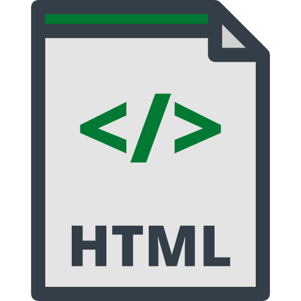
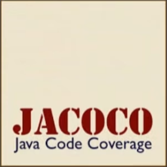

Programming Skills
Languages:
Java

Proficient in Java development for web, desktop, and Android applications.
Python

Experienced in Python for algorithm development, automation, and graphics.
C#

Background in C# programming for system-level and performance-critical applications.
C

Strong foundation in C for low-level programming and system development.
Assembly

Exposure to writing assembly in academic projects.
Typescript

Experienced in TypeScript for game development with custom web engines.
OCaml

Hands-on experience in functional programming, including map, fold, and filter operations.
HTML
Proficient in HTML for creating interactive and user-centric web interfaces.
CSS

Experienced in CSS for styling and animating dynamic web pages.
Tools and Frameworks:
Git

Proficient in Git for version control and managing collaborative projects.
GitHub

Experienced with GitHub for collaborative development and project management.
Unix
Comfortable working in Unix environments for software development and automation.
Linux

Skilled in using Linux for development, system administration, and terminal operations.
Mockito

Proficient in using Mockito for unit testing and test-driven development in Java.
JaCoCo
Experience with JaCoCo for code coverage analysis in Java projects.
React.js
Skilled in React.js for building dynamic web applications.
Gradle

Experienced with Gradle for automated builds and project management.
Software:
IntelliJ IDEA

Proficient in using IntelliJ IDEA for Java development, version control, and UML diagramming.
VS Code

Experienced with VS Code using remote SSH, version control, and software development.
Sublime

Experienced with Sublime for building console applications.
Android Studio

Actively learning Android Studio for building and optimizing Android applications.
Unity

Actively learning Unity for developing 2D/3D games and interactive experiences.
Arduino IDE

Programmed Routines on Various Microcontrollers using Arduino IDE.
Unreal Engine 5

Proficient in Unreal Engine 5 for developing high-performance games and simulations.